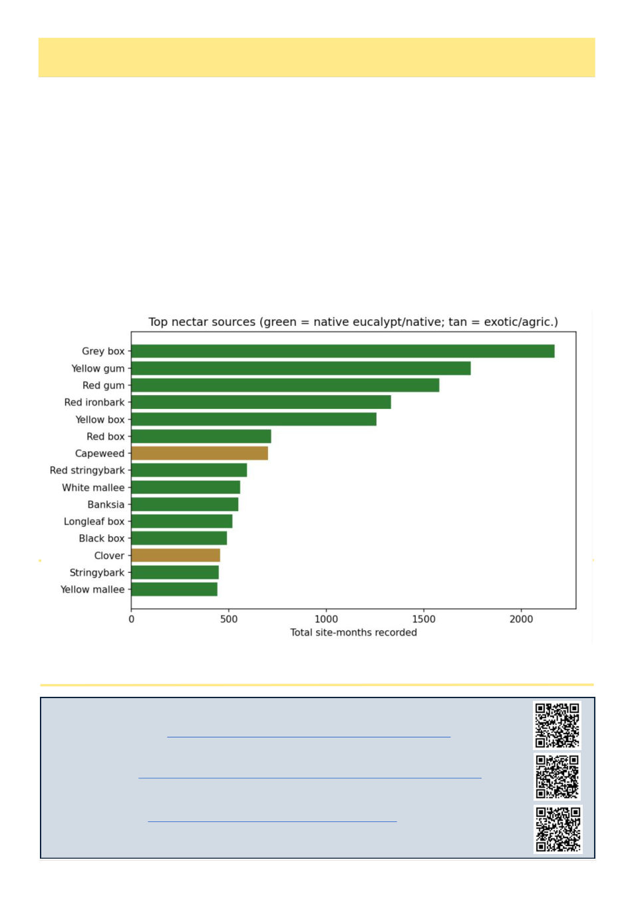

22
Australian Bee Journal
When Will Those Trees Flower?
Recent Podcasts Of Interest
Two Bees in a Podcast – Varroa Biology and Pesticite Research with Kirsten Traynor
What’s the Buzz – SE QLD is screaming for help as unknown viruses cause mass bee losses
Beekeeping Today – Beekeeping Around the World with Dr Robert Owen [Author of the Australian
Beekeeping Guide and founder of Melbourne based Bob’s Beekeeping]
(Continued on page 23)
Supra-annual masting explained
By Kris Fricke
I had been a beekeeper for 15 years already before I came to Australia. I thought I knew a thing or two about
beekeeping. Arriving here, however, I discovered beekeeping is only like 10% of beekeeping here! The rest is the
trees!
In most other countries you can do the same thing every single year. In California I overwintered in the desert
lowlands, hit the citrus in spring, and then it was up the mountains for wild sage in the chaparral, and the meadow
flowers of the oak forests in the narrow valleys. Wild buckwheat at the end of summer. Every year, the same pat-
tern, up and down the mountain.
Here in Australia, however, everything seems to flower every 3 years, every 4 years, every 7 years, when it rains,
or when it doesn’t. No one year is the same. As a new arrival, it was a challenge not just learning these patterns,
but how to distinguish one type of tree from another, and where they could be found, and then of course, finding a
site near them. This can be a real challenge, although it’s also part of what I enjoy about beekeeping here – when
telling non-beekeepers about what we do I like to characterize it like a giant scavenger hunt across the entire region,
challenging your knowledge of the climate and ecosystem to come up with the winning hive movement choice.
Thanks to a 2001 RIRDC (the predecessor of Agrifutures) report1 I can put solid numbers to this behaviour. This
study was conducted in 1996 in collaboration with the Victorian Apiarist Association.
Above: Fig 1. Top nectar sources in Victoria identified in the 1996 survey.